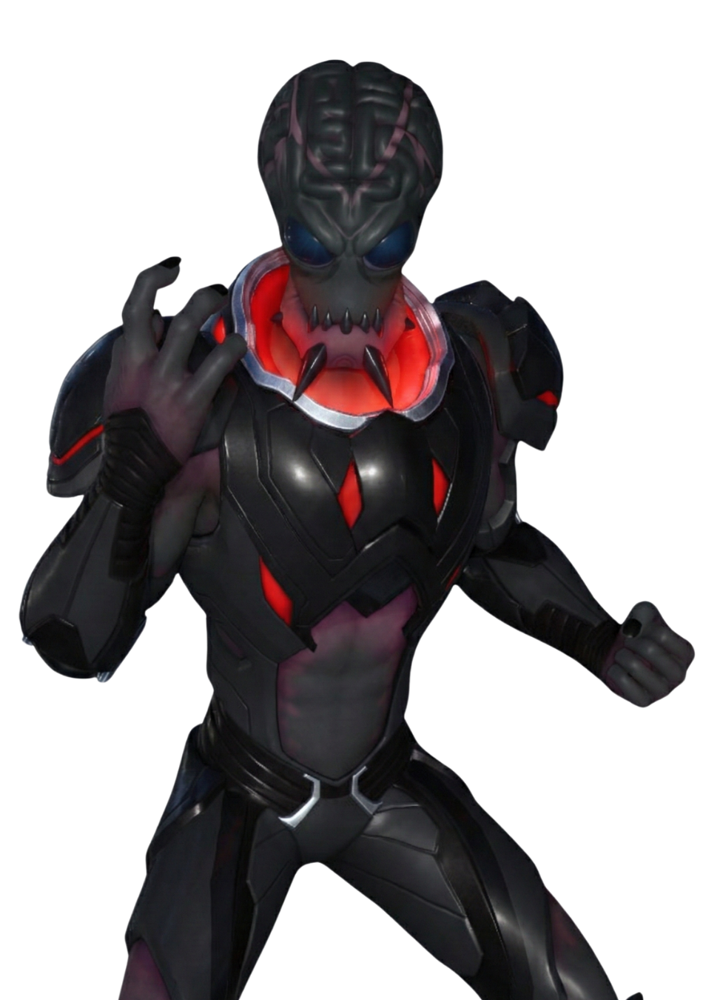
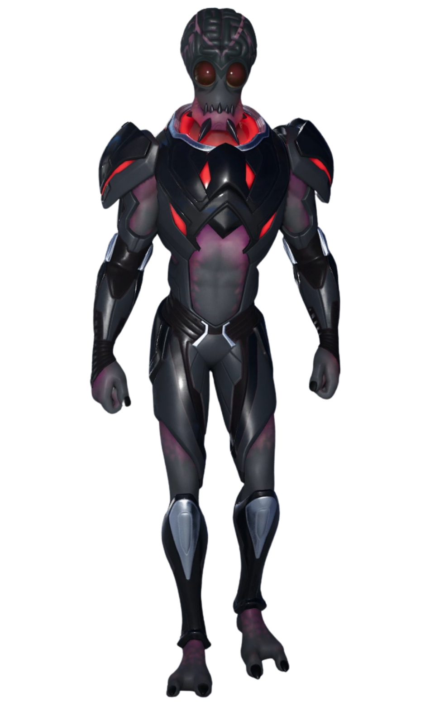

Commandant Kiméra
// Archives Biographiques
L'Envahisseur des Mondes
Chef de guerre d'une race extraterrestre conquérante, le Commandant Kiméra est arrivé en orbite d'Orion à bord d'un vaisseau-mère titanesque. Créature à la peau grise et au crâne disproportionné, il communique par télépathie, sa voix mentale étant décrite comme une "déchirure" pour l'esprit humain. Son objectif unique : s'emparer de l'énergie d'éternité pour son empire.
Le Bourreau Psychique
Dénué de toute empathie, il a ordonné l'enlèvement de Singularité directement depuis Neo Tilted.Dans les entrailles de son vaisseau, il a soumis la gardienne à une torture mentale insoutenable, fouillant ses souvenirs et brisant son esprit morceau par morceau jusqu'à obtenir ce qu'il voulait : l'emplacement exact du Point Zéro.
L'Extraction Interrompue
Alors qu'il commençait à arracher le cœur de l'île avec son rayon tracteur, son vaisseau a été pris pour cible par les canons à ions de l'Institut Onirique. Touché aux points vitaux, le mastodonte métallique s'est écrasé dans l'océan dans un fracas apocalyptique. Si son armée a été décimée, nul ne sait si le Commandant a survécu au crash pour préparer sa vengeance.
// Variantes Visuelles
